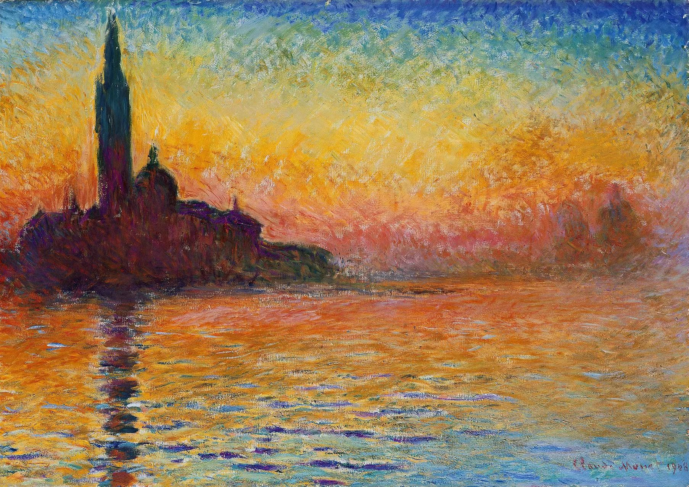

2022.4.21随笔
放在开头
今天看了莫奈的画，画的是真好啊，这种感觉，是一种极度粗糙的精细，让人的感知和自然氤氲的美
每日一句
洞外，夜色晴朗，天气寒冷，没在下雪，他透过树干之间望去，那里一片白茫茫，再抬眼从林间望去，只见这时天色明净，他呼吸时，空气进入肺部，寒冷彻骨。
《丧钟为谁而鸣》第十九章
丧钟为谁而鸣？丧钟就为你我而鸣。
乱想time
我想想吧，我也许真的需要好好歇会了，不是说烂着，而是让自己别想这么多了。大不了就是全部都重新开始
如果你现在就不敢重新开始，那你以后又怎么敢呢？
如果现在不敢做出自己想要做的改变，那你指望什么呢？卧龙凤雏之相帮，只有赤壁一战。
然而卧龙凤雏不世出，人生逆旅困境常在，怎能不靠自己？
谁未曾光荣负膺，谁又未曾垂垂老矣。
田野如今依旧在，而田野上方的青空，却永远沉埋在心里了。
最富有的人，永远是有着，能把时间中的每一刻都化为永恒的“魔法”的人
就好像甘道夫
魔法总是每年一度的烟花，却是我们永远的记忆。
也许他也能征服恶龙，但是对我来说，和烟花没有区别。
如果你看懂了，那你就是没懂；如果你没懂，那你就是真没懂
哈哈，我也会说谜语了
晚安

本博客所有文章除特别声明外，均采用 CC BY-SA 4.0 协议 ，转载请注明出处！